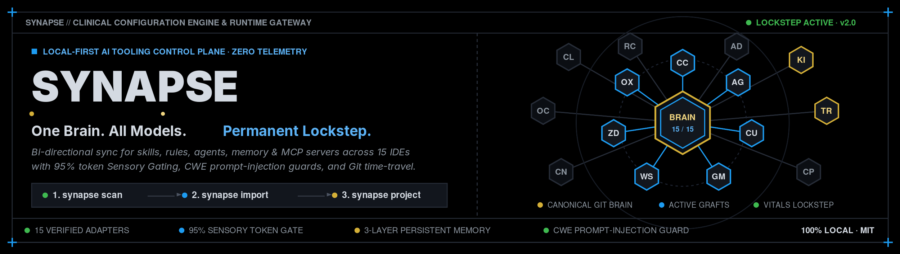

One Brain. All Models.
The universal local-first synchronizer that unifies configuration for Claude Code, Cursor, Gemini CLI, Windsurf, Zed, and 10+ tools into one Git-backed Brain.
# Discovers all 15 AI coding tools across your workstation (read-only)
$ synapse scan
SYNAPSE · INTAKE 7 of 15 present
──────────────────────────────────────────────────────────────────────────
● claude-code config detected
● cursor config detected
● gemini-cli config detected
○ windsurf not present
Next synapse import --dry-run
~/AIBrain/.git
15 Verified Tool Adapters
Every dialect parsed losslessly. Click any adapter to inspect its native file locations and sync policy.
Claude Code / Desktop
CLAUDE.md • .claude/skills/ • .mcp.json
Cursor
.cursorrules • .cursor/rules/*.mdc
Gemini CLI
GEMINI.md • .gemini/settings.json
Windsurf
.windsurfrules • mcp_config.json
OpenAI Codex CLI
.codex/config.toml • AGENTS.md
Cline
.clinerules • cline_mcp_settings.json
Roo Code
.roomodes • .clinerules
Zed
.rules • .zed/settings.json • AGENTS.md
GitHub Copilot
.github/copilot-instructions.md
Antigravity CLI (AGY)
AGENTS.md • .agy/skills/ • .gemini/
Continue
.continue/rules/*.md • config.json
Aider
CONVENTIONS.md • .aider.conf.yml
AWS Kiro IDE
.kiro/steering/*.md • mcp.json
Trae IDE
.trae/rules/*.md • .trae/mcp.json
OpenCode
AGENTS.md • Multi-Agent Spec
Dual-Zone Master Governance (SYNAPSE.md)
Eliminates chaotic prompt drift. Separates non-negotiable safety and clinical invariants from user engineering customizations with cryptographic tamper protection.
Tamper-evident, universally projected agent invariants enforced across all 15 tools.
<!-- SYNAPSE-CORE-HASH: d84fe6b2... -->
1. Universal Invariants (No mock-free refactors)
2. Sensory Gating (Context compression hooks)
3. Synaptic Memory Retrieval Protocols
Custom developer specifications, architectural styles, and operational demeanor.
# --- ZONE 2: USER ENGINEERING CONTEXT ---
• Stack: Rust, TypeScript, Tauri, Tailwind
• Testing: Strict TDD with Vitest & Cargo
• Demeanor: Clinical, concise, zero emojis
95% Token Auto-Compression for AI Agents
Eliminate agent context bloat. Intercept verbose test suites, build logs, and linters, stripping repetitive noise while preserving 100% of errors, stack traces, and diagnostics.
test core::adapter::claude_test ... ok
test core::adapter::cursor_test ... ok
test core::adapter::gemini_test ... ok
test core::adapter::windsurf_test ... ok
... [225 identical "ok" lines flooding context] ...
test core::secrets::harvest_test ... ok
test result: ok. 230 passed; 0 failed; 0 ignored
$ synapse exec -- cargo test --workspace
✔ 230 tests passed (collapsed by SYNAPSE)
test result: ok. 230 passed; 0 failed; 0 ignored; finished in 1.4s
─── [SYNAPSE] Context: 8,400 → 240 tokens (97.1% reduction) • Full log: synapse spool show 8f9b2a ───
3D Cybernetic Synaptic Memory Graph
A turbo-charged cinematic node matrix rendered with WebGL Three.js. Inspect live synaptic memory clusters, observe action potentials running along fiber-optic axons, and test the Clinical Alert & Action Center.
Runtime Gateway & Live HUD Cockpit
Point Claude Code, Antigravity CLI, or Cursor to a local reverse proxy that enforces strict tool-calling grammar on local models, gates context tokens, and visualizes vital signs in an interactive terminal HUD.
Local reverse proxy at 127.0.0.1:8088 supporting OpenAI /v1/chat/completions & Anthropic /v1/messages with on-the-fly Sensory Gating & tool repair.
$ synapse serve --upstream http://localhost:11434
• Upstream: Ollama / llama.cpp / BYOK
• Tool-Calling Normalizer: ACTIVE
Interactive raw-mode terminal HUD displaying Cyberdeck block gauges, live token gating metrics, background gateway controls, and canonical Brain lockstep.
$ synapse hud
• Gating: ▰▰▰▰▰▰▰▰▰▰▰▱ (93% Pruned)
• Doctor: ▰▰▰▰▰▰▰▰▰▰▰▰ (0 Faults)
Get Started in 60 Seconds
Three commands to take complete, permanent control of your AI developer environment.
$ synapse scan
Scans home and workspace roots, mapping all 15 supported AI configurations without touching the disk.
$ synapse import --dry-run
$ synapse import
Initializes ~/AIBrain as a local Git repository and snapshots all prompt rules, agents, and MCP servers.
$ synapse sync --daemon
Watches the Brain and all tool configs in the background. Changes merge cleanly and create instant Git commits.